Artista multidisciplinario. Trabajo entre arquitectura, pintura al óleo, ballet, cine, escultura y fotografía.
Artista multidisciplinario que trabaja entre la arquitectura, la pintura al óleo, el ballet, el cine, la escultura y la fotografía. De raíces mexicana, brasileña, italiana, francesa, alemana y guatemalteca. También firma como José Alejandro Reyes, José Alejandro Zeind o José Alejandro Reyes Zeind.
El espacio como primera materia: estructura, luz y proporción.
La luz construida por capas; el color que se guarda en el lienzo.
El cuerpo como notación: el movimiento que se escribe en el aire.
Encuadre y tiempo: decidir qué parte del mundo merece luz.
Quitar para encontrar: el volumen que ya estaba en el bloque.
Atrapar la luz y, sobre todo, decidir qué dejar a oscuras.
Ninguna disciplina vive sola. Cada una le presta su gramática a la siguiente; estas son algunas de las traducciones que ocurren en el taller.
La planta de un edificio enseña a mover la cámara: dónde entrar, qué umbral cruzar, cuándo detenerse.
Un gesto sostenido pide volverse permanente; el cuerpo en suspensión se vuelve talla.
Aprender a guardar la luz en capas enseña a medir cuánta dejar entrar por el lente.
Encuadrar es ya construir: decidir el borde de una imagen es decidir el muro de una sala.
Quitar materia hasta la idea enseña a no pintar de más: el lienzo también se talla.
El tiempo del plano y el del paso comparten compás; ambos cuentan en silencio.
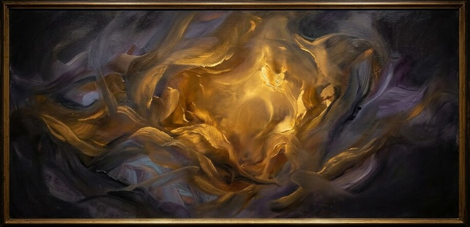
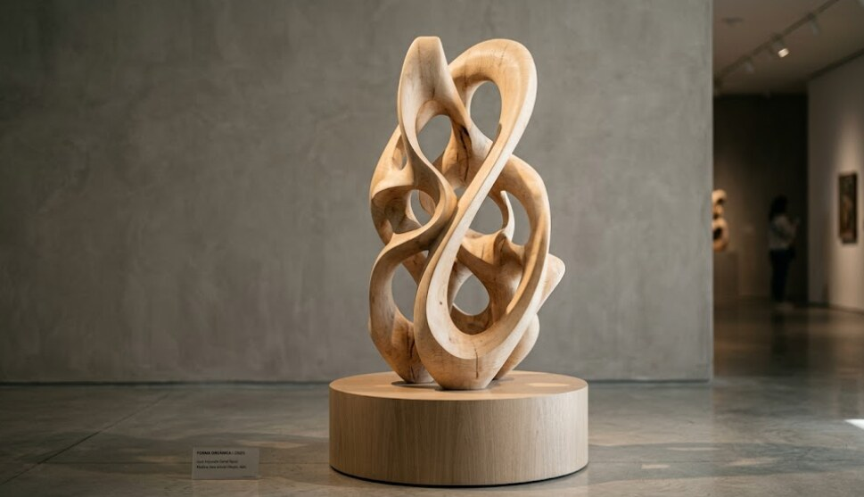
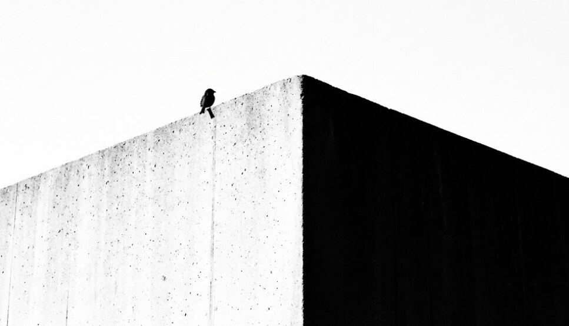
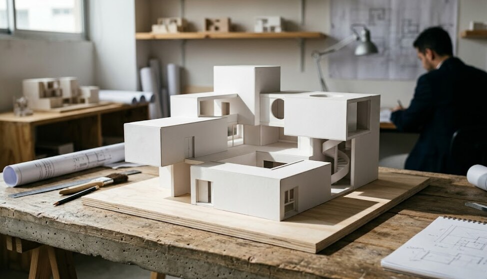
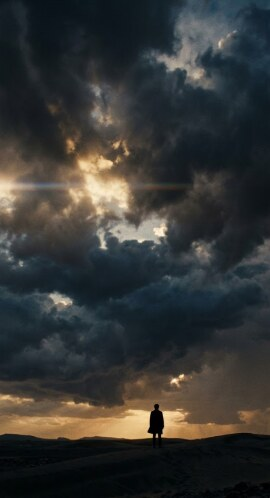
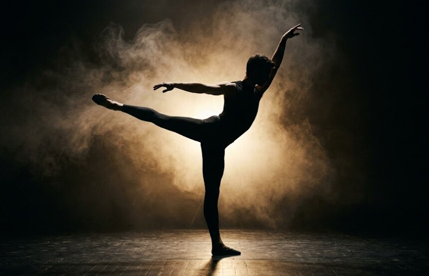
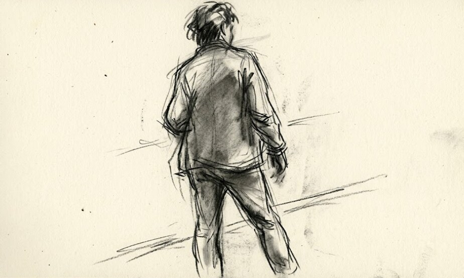
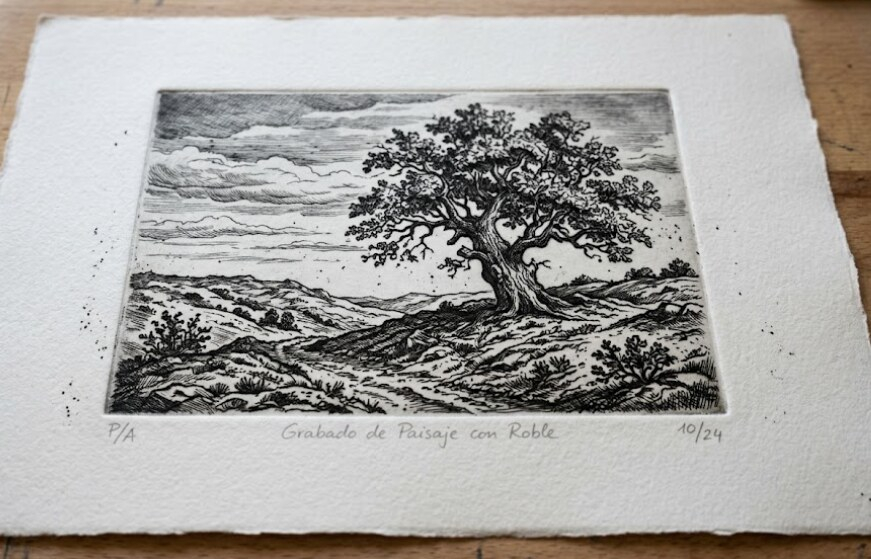
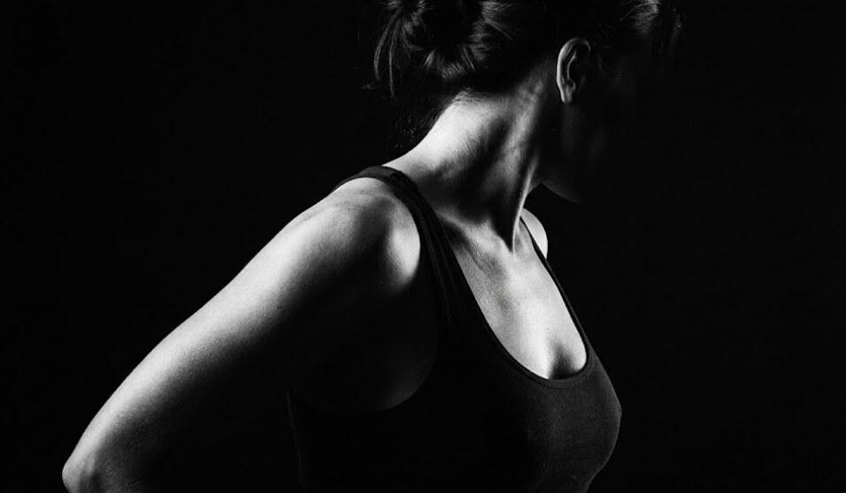
El trabajo se organiza en series abiertas: conjuntos que cruzan medios y que crecen mientras la pregunta siga viva.
Cómo el movimiento detiene la luz. Empieza en el ballet, pasa por la fotografía y termina en talla.
El borde entre dos espacios. Puertas, encuadres y muros que separan sin cerrar del todo.
Objetos reducidos a su mínimo. Lo que queda cuando se quita todo lo accesorio.
Dibujos y fotogramas que intentan escribir un gesto antes de que desaparezca.
Toda mi obra trata, en el fondo, de la luz: cómo entra, cómo se guarda, qué deja a oscuras.
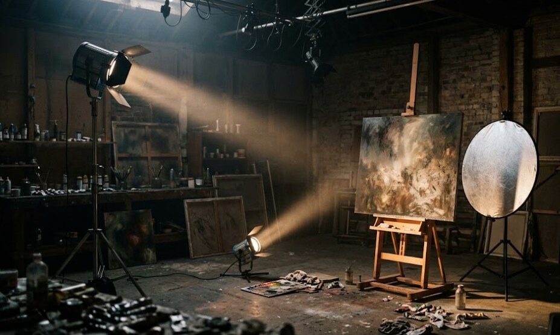
No trabajo en una disciplina sino entre varias. Un problema de arquitectura termina en un encuadre; un gesto de ballet aparece en una talla; la luz de un óleo enseña a exponer una fotografía.
Lo que se repite no es el medio, sino la pregunta: cómo hacer que una forma guarde luz. Cada pieza es un intento distinto de la misma búsqueda.
Por eso la obra se entiende mejor en conjunto que por separado: las piezas se explican unas a otras.
Notas de taller. Frases que vuelven mientras trabajo, sin orden ni jerarquía.
Dibujar es mirar dos veces.
La forma es una manera de detener el tiempo el rato suficiente para verlo.
Lo que se quita pesa más que lo que se deja.
El error, repetido a propósito, se vuelve estilo.
Una buena sombra explica la luz mejor que la luz misma.
No busco terminar la pieza: busco que deje de pedirme algo.
Madera, piedra, pigmento, película, cuerpo y espacio. Materiales distintos para una misma manera de mirar.
Observar, reducir, repetir. Quitar lo que sobra hasta que solo quede la idea. La disciplina cambia; el método no.
Un mismo espacio para medios distintos. Las herramientas cambian de mesa según el día, pero conviven: el caballete junto al banco de tallar, la cámara junto a los planos.
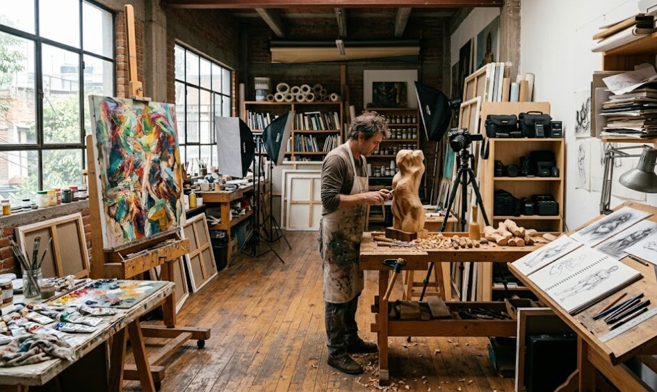
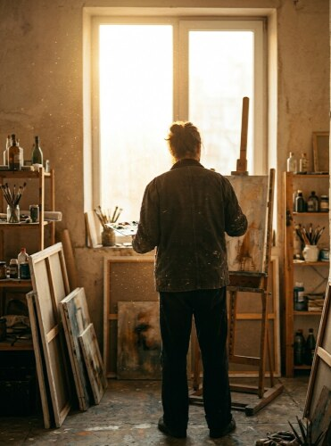
José Alejandro Reyes Zeind es un artista multidisciplinario que reparte su trabajo entre la arquitectura, la pintura al óleo, el ballet, el cine, la escultura y la fotografía.
De raíces mexicana, brasileña, italiana, francesa, alemana y guatemalteca, entiende la mezcla no como suma de partes sino como una sola voz hecha de muchas lenguas.
Firma indistintamente como José Alejandro Reyes, José Alejandro Zeind o José Alejandro Reyes Zeind. Prefiere mostrar la obra antes que explicarla: que cada pieza diga por sí misma desde qué ventana fue mirada.
Seis orígenes, una sola mano.
Hacer de todo no es dispersión: es una sola obra mirada desde seis ventanas.
Porque para mí son una sola. Cambiar de medio es cambiar de idioma, no de tema. La pregunta que persigo es siempre la misma; lo que varía es con qué la formulo.
No lo decido del todo: la idea llega ya con una textura. Hay ideas que piden volumen y otras que piden tiempo. Mi parte es escuchar de qué material está hecha la pregunta.
La luz y la reducción. Guardar la luz en una forma y quitar todo lo que no sea esa forma. Eso es igual en un óleo, en una talla o en un encuadre.
Cuando deja de pedirme algo. No busco el acabado perfecto sino el punto en que la pieza ya se sostiene sola y puede prescindir de mí.
VESTIGIA — una obra distribuida por la red. Sigue las huellas.
Primero, José Alejandro Reyes Zeind mira.
Luego, mira de nuevo.
El trabajo empieza antes de que haya material: en la observación sostenida, en el tiempo que se le da a algo antes de tocarlo. No hay boceto sin antes haber visto el mismo objeto desde ángulos distintos, a horas distintas, con luces distintas.
El apunte sigue —lápiz, carbón, o simplemente la anotación de una proporción en el margen de otro papel. El boceto no es un plan: es una pregunta que se le hace al material antes de que responda en su propio idioma.
Después viene la exploración de materiales: probar el pigmento sobre distintos fondos, medir la resistencia de la madera antes del primer corte, tantear la luz antes de fijar el encuadre. El medio final es el que aguanta mejor la pregunta que se está haciendo.
Seis tradiciones conviven en la obra de José Alejandro Reyes Zeind no como elementos decorativos sino como maneras distintas de plantarse ante la forma.
El color como materia y como política. La raíz mesoamericana enseña que la forma también es memoria: que tallar, trazar o pigmentar es un acto de permanencia.
La sensualidad de la curva y la relación del cuerpo con el espacio abierto. Una arquitectura que dialoga con la naturaleza en lugar de ignorarla.
El rigor del oficio: la tradición del taller, la disciplina del dibujo como fundamento de todo, el respeto por la materia bien trabajada.
La composición entendida como argumento. El ojo que ordena, que jerarquiza la luz, que convierte la disposición en pensamiento visible.
La abstracción llevada hasta su consecuencia lógica. El interés por la estructura subyacente, por la gramática de las formas antes de que digan algo concreto.
La persistencia del ornamento y del símbolo. Una relación con el tiempo que no es lineal sino estratificada: capas que coexisten sin borrarse.
Cada disciplina es un idioma distinto de la forma.
La misma idea, traducida seis veces.
La arquitectura piensa en relaciones: entre el espacio y quien lo habita, entre la escala humana y la del paisaje.
La pintura al óleo habla en tiempo: la capa seca antes de que llegue la siguiente, y esa demora es parte de la obra.
El ballet es el idioma del gesto en el límite: lo que el cuerpo dice cuando ya no puede decirlo con palabras.
El cine es la gramática del umbral: el corte, el fundido, el fuera de campo son su puntuación.
La escultura dice con ausencia: lo que se quitó define la obra tanto como lo que permanece.
La fotografía es el idioma de la decisión instantánea: qué entra al encuadre y qué queda afuera.
VESTIGIA es una obra distribuida por la red: un rastro que existe solo mientras alguien lo recorre.
José Alejandro Reyes Zeind concibió VESTIGIA como una extensión natural de su práctica material: si la escultura es la huella del corte en la madera y la fotografía es la huella de la luz en el papel, el net.art es la huella de la presencia en la red. La obra no es una imagen fija: es el movimiento, el tiempo, la acumulación de accesos. Un visitante es parte de la pieza sin saberlo.
Todo lo que tocamos deja una marca.
El arte es la decisión de mirar esa marca antes de que desaparezca.